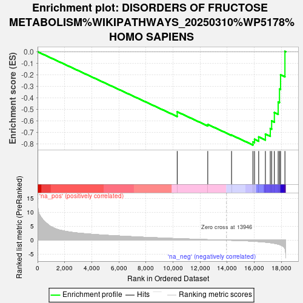
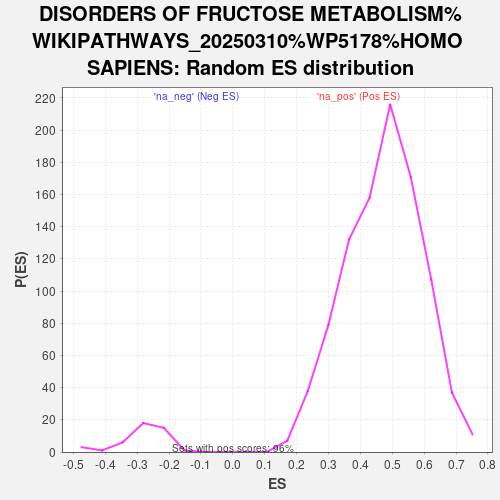

| | | Dataset | ranked_genes |
| Phenotype | NoPhenotypeAvailable |
| Upregulated in class | na_neg |
| GeneSet | DISORDERS OF FRUCTOSE METABOLISM%WIKIPATHWAYS_20250310%WP5178%HOMO SAPIENS |
| Enrichment Score (ES) | -0.81024206 |
| Normalized Enrichment Score (NES) | -2.896294 |
| Nominal p-value | 0.0 |
| FDR q-value | 0.0 |
| FWER p-Value | 0.0 |
Table: GSEA Results Summary

Fig 1: Enrichment plot: DISORDERS OF FRUCTOSE METABOLISM%WIKIPATHWAYS_20250310%WP5178%HOMO SAPIENS
Profile of the Running ES Score & Positions of GeneSet Members on the Rank Ordered List
| SYMBOL | RANK IN GENE LIST | RANK METRIC SCORE | RUNNING ES | CORE ENRICHMENT | | 1 | HK1 | 10313 | 0.555 | -0.5218 | No |
| 2 | SLC2A2 | 12571 | 0.181 | -0.6316 | No |
| 3 | ALDH1A1 | 14328 | -0.045 | -0.7241 | No |
| 4 | SLC5A1 | 15907 | -0.364 | -0.7832 | Yes |
| 5 | ALDOB | 16023 | -0.392 | -0.7603 | Yes |
| 6 | PFKL | 16332 | -0.499 | -0.7400 | Yes |
| 7 | GPI | 16827 | -0.701 | -0.7149 | Yes |
| 8 | KHK | 17188 | -0.908 | -0.6670 | Yes |
| 9 | SORD | 17289 | -0.961 | -0.6010 | Yes |
| 10 | GLYCTK | 17490 | -1.132 | -0.5278 | Yes |
| 11 | TPI1 | 17771 | -1.437 | -0.4363 | Yes |
| 12 | FBP1 | 17868 | -1.574 | -0.3245 | Yes |
| 13 | G6PC1 | 17947 | -1.722 | -0.2008 | Yes |
| 14 | PGM1 | 18270 | -2.981 | 0.0033 | Yes |
Table: GSEA details [plain text format]

Fig 2: DISORDERS OF FRUCTOSE METABOLISM%WIKIPATHWAYS_20250310%WP5178%HOMO SAPIENS: Random ES distribution
Gene set null distribution of ES for DISORDERS OF FRUCTOSE METABOLISM%WIKIPATHWAYS_20250310%WP5178%HOMO SAPIENS